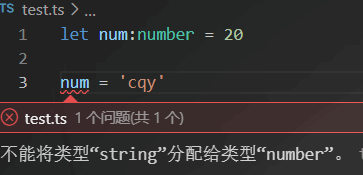

TypeScript
TypeScript
TypeScript是JavaScript的超集，包含JS的所有元素，能运行JS代码，并扩展了JS的语法。
TypeScript为JS增加了类型支持
为什么要为JS增加类型支持： JS代码中绝大部分的错误都是类型错误。从编程语言的动静来区分，JS属于动态类型的编程语言（即在执行的时候做类型检查）。对JS来说，要等到执行它的时候才能发现错误。
TypeScript的优点： typescript属于静态编程语言，在编译期进行类型检查，这样可以在代码运行前就发现错误，可以大大减少找Bug、改Bug的时间。
除此之外，TS还支持最新的ECMAScript语法，可以让你走在前端技术的最前沿。各大前端框架（例如Vue、React）都使用了TS
开始
我们需要全局安装typescript，才能使用它。
它用来将ts代码转化成js代码
1 | npm i -g typesript |
使用typescript书写的文件后缀名是.ts
让我们来创建一个简单的ts文件
1 | function sum(num1, num2) { |
我们需要在终端使用命令tsc xxx.ts来编译ts文件，使用这个命令之后会在同一个目录下生成对应的js文件
但是，这个时候我们会发现终端报错了，原因是ts和相应的js发送了命名冲突的问题
我们可以通过tsc --init来生成ts配置文件tsconfig.json，这样就可以解决ts和js冲突的问题。但是，这样操作之后ts文件中又出现了新的问题
我们暂时可以通过在tsconfig.json中将"strict": true项注释掉来解决。（具体问题会在之后说明）
可以在TS官网查看ts配置文件的说明和具体配置
还有一个问题就是，我们每改动一次ts文件，就需要执行tsc xxx.ts来手动编译，十分的不方便。
我们可以在安装npm i -g ts-node来实现保存文件后自动编译，再运行js代码
之后我们只需要用ts-node xxx.ts命令就可以了
TS常用类型
TS在JS的基础上额外增加了：类型系统
JS也有类型（比如number、string等），但是JS不会检查变量的类型是否发生变化 ，而TS会检查。
例如：在ts中我们定义了一个number类型的变量，当我们将他赋值为一个string时，ts就会报错（在js中是不会报错的）

TS常用基础类型分为两类： 1. js已有类型 2. ts新增类型
- js已有类型
原始类型：number/string/boolean/undefined/symbol
引用类型：数组，对象，函数 - ts新增类型
联合类型、自定义类型（类型别名）、接口、元组、字面量类型、枚举、void、any等
TS类型注解
示例代码：
1 | let num:number = 20 |
说明： 代码中的:number就是类型注解
作用： 为变量添加类型约束
原始类型
原始类型：number/string/boolean/undefined/symbol
特点：这些类型完全按照js中的类型名称来书写
数组类型
在定义时确定了是某种类型的数组，在这个数组中就只能用这个类型的值
数组的两种写法：（更推荐number[]的写法）
1 | let arr: number[] = [1, 2, 3] |
联合类型
如果数组中想要有number类型，又要有string类型时，就可以使用联合类型
|在ts中叫做联合类型（由两个或多个其他类型组成的类型，表示可以是这些类型中的任意一种）
示例代码：
1 | //注意要用括号包裹 |
类型别名（自定义类型）
类型别名（自定义类型）：为任意类型起别名
当同一个复杂的类型被多次使用，可以通过类型别名来简化使用
使用方法：用type关键字来创建类型别名
类型别名可以使用任意合法的变量名称。创建类型别名后，直接使用该类型别名作为变量的类型注解
示例代码：
1 | type myArray = (number | string)[] |
函数类型
函数类型实际上指的是：函数参数和返回值的类型
为函数指定类型的两种方式：1.单独指定参数、返回值的类型 2.同时指定参数、返回值的类型
方法一：单独指定参数、返回值的类型
示例代码：
1 | //在每个参数后面指定类型，在函数的参数列表括号后面指定函数返回值类型 |
方法二：同时指定参数、返回值的类型（只适用于函数表达式）
示例代码：
1 | // : (num1:number, num2:number) => number 这一块代码就是为参数和返回值指定类型 |
如果函数没有返回值，可以给函数返回值类型设置为void
示例代码：
1 | function say(): void { |
可选参数
某些函数的参数可以传也可以不传。可以通过在可传可不传的参数名称后面加?
注意： 可选参数只能出现在参数列表的最后
示例代码：
1 | //参数 n3 是可选参数 |
对象类型
ts中在对象名后面使用: {}的结构来描述对象的结构（有什么类型的方法和属性），里面的结构用;分隔。然后再后面接= {}来具体写对象结构
示例代码：
1 | //描述对象结构用 ';' 分隔，具体写对象结构和js一样用 ',' 分隔 |
如果将描述对象结构换行写，就不需要;
示例代码：
1 | let person: { |
同样的，对象的可选属性也是在属性名后面加一个?
示例代码：
1 | function myAxios(config: { url: string; methods?: string }): void {} |
接口
当一个对象类型被多次使用时，一般会使用接口来描述对象的类型，达到复用的目的
使用interface关键字声明接口，接口名称可以是任意合法变量名称。
声明接口后，直接使用接口名称作为变量的类型
示例代码：
1 | interface Person { |
接口与类型别名对比
相同点：都可以给对象指定类型
将上面接口中的代码改成用类型别名来定义也是可以达到目的
示例代码：
1 | type Person = { |
不同点：
- 接口只能为对象指定类型
- 类型别名不仅可以为对象指定类型，也可以为任意类型指定别名
接口继承
如果两个或多个接口之间有相同的属性和方法，可以将公共的属性或方法抽离出来，通过继承来实现复用
使用extends关键字实现继承
示例代码：继承之后Point3D就拥有了Point2D所有的属性和方法
1 | interface Point2D { |
元组
元组类型是另一种类型的数组，它确切得知道包含多少个元素，以及特定索引对应的类型
示例代码：
1 | let arr: [number, string] = [1, '1'] |
类型推论
在ts中，某些没有明确指出类型的地方，ts的类型推论机制会帮助提供类型。
发生类型推论的2种常见场景：
- 声明变量并初始化时
也就是说：ts会根据你初始化的值来推断这个变量的类型 - 函数返回值
示例代码：
1 | // 声明变量时初始化了值，ts会根据值来推论变量类型 |
示例代码：
1 | function sum(num1: number, num2: number) { |

推荐在能省略类型注解的地方就省略，充分利用ts的类型推断，提升开发效率
类型断言
有时候我们会比ts更加明确一个值的类型，那么这个时候就可以用类型断言来指定更具体的类型
例如我们需要访问一个a标签的href属性，下面是代码：
1 | let link = document.getElementById('link') |
上面报错的原因是：document.getElementById()得到的a变量的类型是HTMLElement类型。该类型只含有标签公共的属性和方法，没有a标签特有的属性。
也就是说，ts给我们的类型太宽泛了，无法操作a标签特有的属性
这个时候可以使用类型断言来指定更具体的类型
使用as关键字实现类型断言，在as后面增加一个更具体的类型
1 | let a = document.getElementById('link') as HTMLAnchorElement |
字面量类型
来看下面的两行代码,这两个变量的类型分别是什么?
结果就是str1的类型是string，str2的类型是’harden’
1 | let str1 = 'kyrie' |
是的，你没有看错，str2的类型就是’harden’
解释：
- str1是一个变量（let），它的值可以是任意字符串，所以类型是
string - str2是一个常量（const），它的值不能变化只能是’harden’，所以它的类型是
harden
此处的harden就是一个字面量类型
除了字符串外，任何的js字面量（比如对象，数字等）都可以作为类型使用
字面量类型可以用来表示明确的可选值
比如我们现在需要定义一个函数，它接收一个参数，表示方向，假设我们这里只能使用’up’、’down’、’left’、’right’作为值
我们可以用string作为参数的类型，但是这样不够严谨。万一传入的不是我们规定的四个值呢？
1 | function myDirection(direction: string) { |
所以在这里，相比于string，字面量类型更加的严谨
1 | function myDirection(direction: 'up' | 'down' | 'left' | 'right') { |
枚举
枚举的功能类似于字面量+联合类型的功能，也可以表示一组明确的可选值
枚举： 定义一组命名常量。它们描述一个值，该值可以是这些命名常量中的一个
使用enum关键字定义枚举
约定枚举名称、枚举中的值以大写字母开头
可以直接使用枚举名称作为类型注解
直接使用点语法访问枚举成员
示例代码：
1 | enum Direction { Up, Down, Left, Right } |
枚举成员是有值的，默认从0开始自增。例如我们上面的代码中，Up的值就是0、Down的值就是1
我们也可以手动为枚举成员设置值
1 | //Up = 10 那么 Down = 11、Left = 12 依次类推 |
字符串枚举
枚举成员的值是字符串
字符串枚举没有自增行为，所以要给每一个枚举成员赋值
1 | enum Direction { |
any类型
当值为any时，可以对该值进行任意操作，并且不会有代码提示
不推荐使用any 这会失去ts类型保护的优势
1 | let obj: any = {} |
typeof操作符
在js中，typeof操作符可以用来获取数据的类型
1 | console.log(typeof "hello") //string |
ts也提供了typeof操作符，除了js中已有的功能外，ts中的typeof还可以在类型上下文中引用变量或 属性的类型
例如：根据已有的变量，来获取该变量的类型，简化类型书写
没使用typeof时：
1 | let p = { x: 1, y: 2} |
使用typeof：
1 | let p = { x: 1, y: 2} |
TS高级类型
class类
在ts中创建类和在js中是一样的，都是使用class关键字创建
示例代码：
1 | class Person { |
类继承
和js中一样，使用extends来实现类继承
1 | class Person { |
接口
接口是ts相比于js新增的继承方法
使用implements关键字让类实现接口
一个类实现了一个接口，就意味着这个类必须提供接口的所有属性和方法
1 | interface Person { |
类的可见性修饰符
类成员可见性：class的方法或属性对于class外的代码是否可见
可见性修饰符：1.public（共有的）2.protected（受保护的）3.private（私有的）
默认是public
1 | class Person { |
protected表示受保护的，仅对其声明所在类和子类可见（实例对象也不可以）private表示私有的，只能在声明所在类中可见
readonly
readonly修饰符：表示只读，用来防止在声明属性和构造函数之外对属性进行赋值
readonly只能修饰属性不能修饰方法
1 | class Person { |
接口或者对象中的属性也可以使用readonly
1 | let obj = { readonly name: 'kyrie' } |
类型兼容性
两种类型系统：
- Structural Type System（结构化类型系统）
- Nominal Type System（标明类型系统）
TS采用的是结构化类型系统，它在进行类型检查时关注的是值所具有的形状
也就是说，如果两个对象具有相同的形状，则认为它们属于同一类型
示例代码：
1 | class point { x: number; y: number } |
上面的代码中，p类型被显示的标注为point类型，但是它的值是point2D的实例，并且还没有类型错误
因为ts用的是结构化类型系统，只检查point和point2D的结构是否相同
更准确的说法就是：对于对象类型来说，y成员至少与x相同，则x兼容y
示例代码：
1 | class x { num1: number; num2: number } |
接口之间也像对象一样可以兼容，而且对象和接口之间也是可以兼容的
函数兼容
函数之间的兼容性需要考虑：
- 参数个数
- 参数类型
- 返回值类型
参数个数
参数多的兼容参数少的（或者说，参数少的可以赋值给多的）
示例代码：
1 | type F1 = (x:number) => void |
在JS中省略用不到的函数参数实际上是很常见的，这样的使用方式，促成了TS中函数类型之间的兼容性
参数类型
相同位置的参数类型要相同（原始类型）或兼容（对象类型）
示例代码：
1 | type F1 = (x:number, y: {str1:string, num:number}) => void |
返回值类型
只关注返回值类型本身。返回值是原始类型，那两个要相同
返回值是对象类型，成员多的可以赋值给成员少的
示例代码：
1 | type F1 = () => {name:string, age:number} |
交叉类型
用于组合多个类型为一个类型（常用于对象类型）
使用&来定义交叉类型
示例代码：
1 | type Student = {name: string} |
泛型
泛型是可以在保证类型安全的前提下，让函数、接口、类等可以与多种类型一起工作
例如：我们现在要定义一个打印函数，我们给他传入什么就返回什么
1 | function print(item:number):number { return item } |
在上面的函数中，我们只能传入数字类型的数据，如果我们要实现所有类型的，那岂不是要定义很多个函数。如果使用any类型的话就失去了类型保护
这个时候就可以用到泛型
泛型在保证类型安全的同时，可以让函数、接口、类等可以与多种类型一起工作，可复用
创建泛型函数：
在函数名称的后面添加<>，尖括号中添加类型变量，变量名称合法即可
可以将函数参数和返回值类型也设置为这个类型变量，表示参数和返回值具有相同的类型
1 | function print<Type>(item:Type):Type { return item } |
在调用泛型函数时，可以省略<>来简化函数调用
ts内部会采用类型参数推断的机制，来根据传入的实参自动判断出类型变量的类型
1 | const num = print(1) |
泛型约束收缩
在前面定义的泛型会遇到一些问题，假设我们一个数组，我们想在函数内部访问数组的长度。
这个时候就会报错，因为类型变量Type可以表示任何类型，这导致无法访问任何类型（无法保证Type类型的数据存在length属性）
1 | function print<Type>(item:Type):Type { |
此时，就需要为泛型添加约束来收缩类型
添加泛型约束收缩类型，主要有两种方法：
- 指定更加具体的类型
- 添加约束
指定更加具体的类型
例如：将类型改为Type[]（Type类型的数组），这样就可以访问length属性了
1 | function print<Type>(item:Type[]):Type[] { |
添加约束
1 | interface HasLength {length: number} |
解释:
- 创建描述约束的接口HasLength，该接口要求提供length属性
- 通过
extends关键字使用该接口（此处不做为继承），为泛型添加约束 - 该约束表示：传入的类型必须具有length属性
泛型接口
在接口名称后面添加<类型变量>，这样就变成了一个泛型接口
接口中的所有成员都可以使用（不是必须使用）类型变量
使用泛型接口时，要显式的指定类型
示例代码：
1 | interface nameFunc<Type> { |
泛型类
类似于泛型接口，在类名后面加<类型变量>
示例代码：
1 | class Person<Type> { |
泛型工具类型-Partial
Partial<Type>用来构造一个类型，将Type的所以属性设置为可选（不会改变原类型，只是根据原来的创建一个新的类型）
示例代码：
1 | interface props { |
泛型工具类型-Readonly
Readonly<Type>用来构造一个类型，将Type的所以属性设置为只读
示例代码：
1 | interface props { |
泛型工具类型-Pick
Pick<Type, keys>从Type中选择一组属性来构造新类型
示例代码：
1 | interface props { |
TS中的两种文件类型
TS中有两种文件类型：1. .ts文件 2. .d.ts文件
.ts文件
既可以包含类型信息也可以执行代码
可以被编译成.js文件，并执行代码.d.ts文件
只包含类型信息的类型声明文件
不会生成.js文件，仅用于提供类型信息
示例代码：
1 | // .d.ts文件 |
类型声明文件
在使用ts开发项目时，类型声明文件包括以下两种
- 使用已有的类型声明文件
- 创建自己的类型声明文件
使用已有的类型声明文件
内置类型声明文件
TS为JS运行时可用的所有标准化内置API都提供了声明文件
例如在使用数组的方法时会有相应的提示和类型信息，这些都是TS提供的内置类型声明文件
第三方库的类型声明文件
一些第三方库会有自己的类型声明文件，当正常导入该库时，ts会自动加载该库的类型声明文件。
创建自己的类型声明文件
当有多个.ts文件都用到同一个类型时，可以创建.d.ts文件提供该类型
示例代码：
创建类型声明文件
1 | //创建.d.ts文件 index.d.ts |
在.ts文件中使用
1 | //导入时不需要写.d.ts后缀，会报错 |
在ts文件中使用js
在ts中导入js文件时，ts会自动加载与js同名的.d.ts文件，以提供类型声明
declare关键字：用于类型声明，为其他地方（比如.js文件）已存在的变量声明类型，而不是创建一个新变量
对于type、interface等明确是ts类型的（只能在ts中使用的），可以省略declare关键字
对于let、function等具有双重含义，应该要使用declare关键字，明确指定此处用于类型声明
示例代码：
定义一个要导入到ts中的js文件
1 | //utils.js |
js同名的.d.ts类型声明文件
1 | //utils.d.ts |
ts中导入js文件
1 | import { str, sum } from './utils.js' |